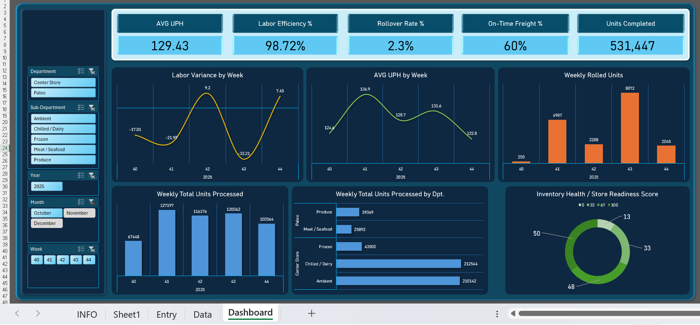

This website presents two end-to-end, execution-driven case studies that demonstrate readiness for
Product / Program Management roles: (1) improving Inventory Health to reduce INF and protect customer
experience, and (2) optimizing Labor Performance to reduce cost while maintaining throughput and service.
Project Theme
Execution Systems
Designed lightweight mechanisms that change behavior
Primary Outcomes
CX + Cost
INF reduction + labor efficiency
Artifacts
Dashboards
Screenshots + transparent raw data
PM Signal
Decision Quality
Tradeoffs, constraints, and measurable impact
Professional Summary
I build execution systems that translate ambiguous operational problems into measurable outcomes.
My approach emphasizes metric clarity, disciplined operating mechanisms, and transparent review
loops that enable teams to improve performance without heavy tooling overhead.
Core PM Strengths
Problem Framing: convert symptoms into controllable drivers
Metrics Ownership: align leading indicators to outcome KPIs
Execution Design: daily/weekly operating cadence that scales
Stakeholder Alignment: create clarity without blame
Each project page includes: the business problem, success metrics, execution mechanism, decision
log, results, and raw-data transparency screenshots. This is formatted for a hiring manager to scan
in minutes.
What you’ll see (fast scan)
• Executive summary → • Metrics table → • Dashboards → • Raw data snapshots → • Decision log →
• Results & next steps → • PM rubric mapping
Why screenshots (instead of files)
Screenshots focus the review on decision-making and outcomes, while avoiding tool-specific debugging.
This matches how PMs present work internally (narratives + dashboards + artifacts).
The system uses a simple daily intake (data entry) that appends into raw data. The dashboard serves as
a weekly leadership view while preserving daily drill-down. This enables consistent review, prioritization,
and closure on execution misses (gap scans, go-finds, high-priority cycle counts).
Decision Log (PM thinking under constraints)
• Chose leading indicators (completion + remaining) to prevent lagging surprises.
• Segmented by department/sub-department to avoid averaging away problems.
• Designed for frontline usability (simple daily entry, complexity behind the scenes).
• Captured notes to explain “why” variability occurs (labor/freight constraints).
Evidence (Screenshots)
Data Entry: Standard daily intake for execution + INF drivers.Dashboard: Center Store view segmented by sub-department.Dashboard: Paleo view highlights fresh-department variability.Raw Data (Sep): Baseline period showing elevated INF + misses.Raw Data (Oct): Stabilization period with improved completion patterns.Raw Data Snapshot: Demonstrates structured daily logging.
Results & Impact (Executive Summary)
INF trended downward from ~8% toward ~4.8–5.0%
Execution consistency improved across departments
Rolled freight risk reduced through closure and stocking discipline
Automate ingestion where possible, normalize the health score, create alerts for missed tasks, and
scale the operating mechanism across stores with a standardized weekly review cadence.
Project 2 · Labor Performance Optimization & Cost Control
Problem
Labor cost variability week-to-week created inconsistent productivity
Freight timing and rollover caused labor waste and throughput drops
Leadership needed a weekly-first view with daily drill-down
Required clear separation between Center Store and Paleo
Goal
Improve UPH and labor efficiency while reducing variance and rollover impact.
Key Metrics
Metric
Definition
Decision supported
Notes
UPH
Units completed ÷ labor hours
Where we’re productive vs inefficient
Core throughput measure
Labor Efficiency %
Actual ÷ Planned hours
Over/under staffing detection
Interpreted weekly
Rollover Rate %
Rolled units ÷ total units
Operational drag + readiness risk
Should trend down
On-time Freight %
Freight on-time ÷ total
Separates execution vs upstream timing
Explains variance
Associate Coverage Blocks
04–08, 08–12, 12–16, 16–20
Shift shaping + staffing distribution
PM-style capacity planning
Operating Cadence (how leaders used this)
Weekly review: planned vs actual labor, average UPH, rollover trend, and on-time freight performance.
Daily drill-down via slicers when a week underperformed. This enabled targeted staffing decisions and
root-cause clarity (late freight vs labor vs execution).
Decision Log (PM tradeoffs)
• Prioritized weekly-first leadership view to reduce noise and drive action.
• Enforced department separation to prevent blending different operating zones.
• Used time-block staffing to show distribution, not just totals.
• Treated late freight as a variance driver, not a performance excuse.
Evidence (Screenshots)
Dashboard Overview: Executive weekly-first view.Weekly Trend: Throughput and efficiency movement over time.Center Store: Separate operating zone performance view.Paleo: Fresh zone performance view.Raw Data (Labor): Validates inputs for calculation integrity.Raw Data (Nov): Later period snapshot used for trend review.

Raw Data (Oct): October snapshot supporting weekly rollups.Raw Data (Sample): Additional credibility view for reviewers.
Results & Impact (Executive Summary)
Improved visibility into labor efficiency vs freight timing
Enabled weekly staffing and execution focus decisions
Reduced rollover impact by identifying operational choke points
Created a repeatable leadership review mechanism
Next steps (what I’d do as a PM)
Add alerting thresholds, integrate automated data feeds, and build a standardized weekly action plan
template tied to the dashboard outputs (department-specific playbooks).
L4 Senior PM Skills Rubric — Evidence Mapping
How to read this
This mapping translates project evidence into PM-ready behaviors. It’s intentionally written in
“hiring manager language” so it’s easy to evaluate quickly.
Rubric Table
PM Skill Area
Behavior
Evidence from Project 1 (Inventory)
Evidence from Project 2 (Labor)
Problem Framing
Translate symptoms into controllable drivers
INF linked to execution: go-finds, gap scans, cycle counts, rolled freight
Labor variance linked to throughput and freight timing; separated drivers
Baseline Sep, improved Oct, stabilizing toward Nov
Week-over-week improvements via dashboard-driven focus
How I’d present this in a PM interview (talk track)
“I started by defining success metrics tied to customer impact (INF) and operational leading indicators.
Then I designed a daily mechanism that made execution visible and easy to close. Weekly trend views enabled
prioritization and prevented regression. In parallel, I built a labor performance dashboard to control cost
and throughput, isolating freight timing vs staffing decisions. The result was a measurable trend improvement
and a scalable operating cadence.”
Screenshots, narrative, metric definitions, decision logs, and outcomes. No Excel files are required for review
because the focus is PM thinking and impact rather than tool mechanics.
Start at Overview → open Inventory Health → scan screenshots → jump to Rubric table → open Labor Performance.
This is structured for a 5–10 minute hiring manager review.